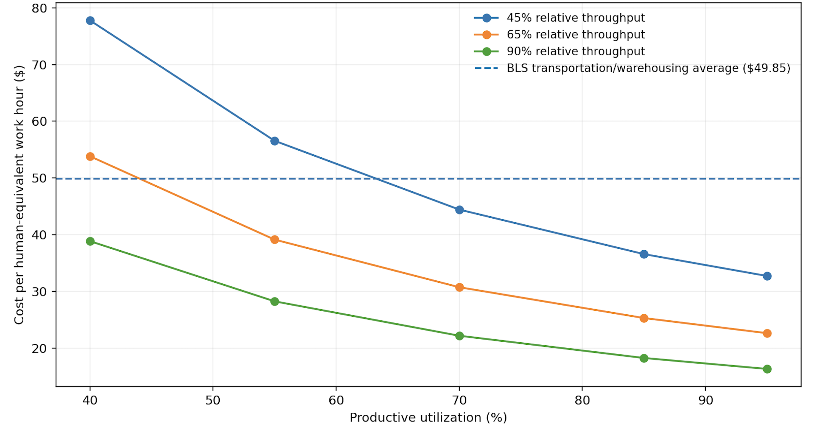

The Economics of Humanoid Robots
Humanoid robots are starting to move out of demos and into real factories and warehouses. That is a big step, but getting a robot to walk around or complete a shift is not the same as making it worth buying. What matters is how much useful work it can do, how reliably it can do it, and what that work actually costs.
The robot that wins commercially might not be the one that can do the most things. It might just be the one that handles a few valuable tasks really well, fits into an existing operation, and gets cheaper to run as it stays busy. For companies deciding whether to deploy these robots, that matters a lot more right now than whether they can eventually do everything a person can.
A Real Deployment Is Not Yet a Business Case
In 2025, Figure 02 worked at BMW Group's Spartanburg plant on a sheet-metal handling task. BMW reported that the robot moved more than 90,000 components during approximately 1,250 operating hours and supported production of more than 30,000 BMW X3 vehicles. That matters because this was real production work, not a lab demo [1, 2].
But there is a catch. Components handled and hours operated do not reveal the purchase or service price, integration expenditure, human intervention time, downtime, scrap rate, or cost of the incumbent process. The pilot shows that the robot could handle the task in a factory. It does not tell us whether using a humanoid was the cheapest option.
Agility Robotics offers another important signal. In October 2026, GXO and Agility announced plans to expand Digit deployments to additional U.S. warehouses in 2027. The companies reported more than 65,000 operating hours across Digit's commercial operations and customer programs [3]. That is a lot of real-world operating experience, but the number covers multiple programs. It does not mean one robot ran for 65,000 hours, and it does not tell us whether customers made money from using it.
The Wrong Denominator
It is tempting to divide a robot's price by the number of hours it can work and compare that with an employee's hourly wage. The problem is that this misses a lot. Robots require deployment engineering, maintenance, software, safety infrastructure, charging, and often human oversight. And just because a robot is turned on does not mean it is getting useful work done.
A better approach is to add up the robot's annual costs, including the hardware, installation, cost of capital, maintenance, software, and supervision. Then divide that by the hours it spends doing productive work. Finally, account for how much it actually gets done compared with a person doing the same task.
The final metric is cost per human-equivalent work hour. That is a tougher test than simply looking at cost per robot hour. A robot that costs $20 per productive hour but achieves half a human worker's output costs $40 per equivalent hour before differences in quality, safety, and workflow are considered.
An Illustrative Unit-Economics Model
I built a simple scenario model to see how these numbers play out. In the base case, a humanoid costs $100,000 to acquire and $20,000 to integrate. It operates over a five-year useful life, incurs $15,000 in annual maintenance and software expense plus $5,000 in supervision, and carries a simplified 10% annual capital charge on installed cost. These are example assumptions, not actual pricing or financial results from Figure, Agility, or another robot company.
Assume 4,000 scheduled hours annually, 75% productive utilization, and task throughput equal to 65% of a human worker's output. Annual modeled cost is $56,000, yielding 3,000 productive robot hours and approximately $18.67 per productive robot hour. Once adjusted for lower throughput, that rises to approximately $28.72 per human-equivalent work hour.
For context, the U.S. Bureau of Labor Statistics reported $49.85 per hour in employer compensation for transportation and warehousing in June 2026: $32.95 in wages and salaries plus $16.90 in benefits [4]. That is an average across the industry, not the cost of hiring someone for one specific warehouse job. It gives us a benchmark, but it does not prove a robot would save money.
Under the illustrative assumptions, the robot appears cheaper on a task-equivalent basis. But change the operating conditions and the conclusion changes quickly. At 50% utilization and 45% relative throughput, modeled cost climbs to approximately $62.22 per equivalent hour. At 85% utilization and 90% throughput, it falls to approximately $18.30. The takeaway is that keeping a robot busy and getting it to work at a useful speed can matter just as much as lowering its price.

Why the First Winners May Be Specialists
There is a good reason companies are interested in human-shaped robots. Factories and warehouses were built around people, so a humanoid might fit into those spaces without a complete redesign. But being human-shaped is not enough on its own. A fixed robot arm, conveyor, automated storage system, or mobile manipulator may be faster, cheaper, or easier to certify for a narrowly defined task.
The best early jobs for humanoids will probably be repetitive, physically demanding tasks in places where staffing is expensive, robots can stay busy, and traditional automation is hard to install. Even there, the comparison must be against the best available alternative, not simply against a human employee.
Being able to switch between different tasks could eventually be a huge advantage. But if a customer only needs one job done, paying extra for capabilities they never use may not make sense. The real challenge is doing the work consistently, then making that same setup work at more than one site.
Where the Value Could Accrue
There are a few different ways companies could win here. Robot manufacturers can capture hardware and service revenue, but they must manage complex supply chains, field support, and manufacturing scale. Software and foundation-model developers could benefit if reusable policies reduce the cost of adding new tasks and improve performance across robot platforms. Component suppliers may capture value through actuators, sensors, batteries, and compute, particularly if multiple manufacturers converge on similar architectures.
Deployment specialists and robotics-as-a-service providers may also matter. Customers often care less about owning a humanoid than about purchasing reliable capacity. A provider that assumes responsibility for maintenance, integration, and guaranteed performance could make adoption easier, but would also absorb utilization and service risks.
So the investment question is not just who builds the most impressive robot. It is who can make customers more productive and keep a real competitive advantage as the technology improves.
What Would Change the Thesis?
There are three things I would want to see before getting more confident in the economics. First, independent or customer-verified deployment data should show sustained task throughput, intervention rates, safety performance, and uptime across multiple sites. Second, customers should disclose the economics of the alternative they replaced, including integration and ongoing support costs. Third, deployments should expand from isolated tasks to repeatable rollouts without proportional growth in engineering headcount.
There are also some pretty obvious risks. Unexpected maintenance can erode savings; low task success rates can require costly human supervision; and purpose-built automation can undercut humanoids in stable workflows. Conversely, better robot learning, lower component costs, and higher utilization could compound to produce attractive economics even before robots become truly general-purpose.
The thing I would watch is not the next viral robot demo. It is whether a customer orders ten more robots because the first ten actually saved them money.
Conclusion
Humanoid robots are already doing useful work in real industrial settings, which is exciting. But getting a robot into a factory and proving that it makes financial sense are two different things. The operating-hour numbers show progress, but we still need better information about costs, productivity, and whether the results hold up across different sites.
The model suggests humanoids could become cost-competitive if they stay busy and get enough work done each hour. The first big businesses in this space might not need robots that can do everything. They might just need robots that do a handful of valuable jobs extremely well. At the end of the day, the economics come down to useful work, not impressive movement.
Sources and Methodology
[1] BMW Group, Figure pilot. https://www.press.bmwgroup.com/global/article/attachment/T0455864EN/644966
[2] Figure AI, Nov 2025. https://www.figure.ai/news/production-at-bmw
[3] GXO / Agility, Oct 2026. https://investors.gxo.com/news-releases/news-release-details/gxo-and-agility-robotics-expand-partnership-accelerate
[4] BLS, June 2026 employer compensation. https://www.bls.gov/charts/employer-costs-for-employee-compensation/costs-by-industry.htm
[5] Goldman Sachs Research, 2024. https://www.goldmansachs.com/insights/articles/the-global-market-for-robots-could-reach-38-billion-by-2035.html
Methodology: All robot economics are hypothetical scenario assumptions; the model uses straight-line depreciation plus a simplified capital charge rather than a full discounted cash flow. The BLS figure is an industry average and does not control for occupation, shift premiums, task throughput, quality, or displacement feasibility.